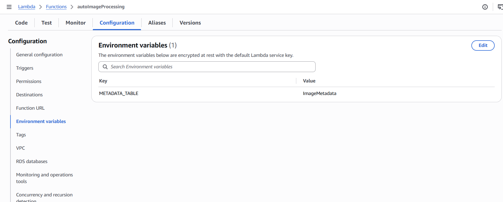
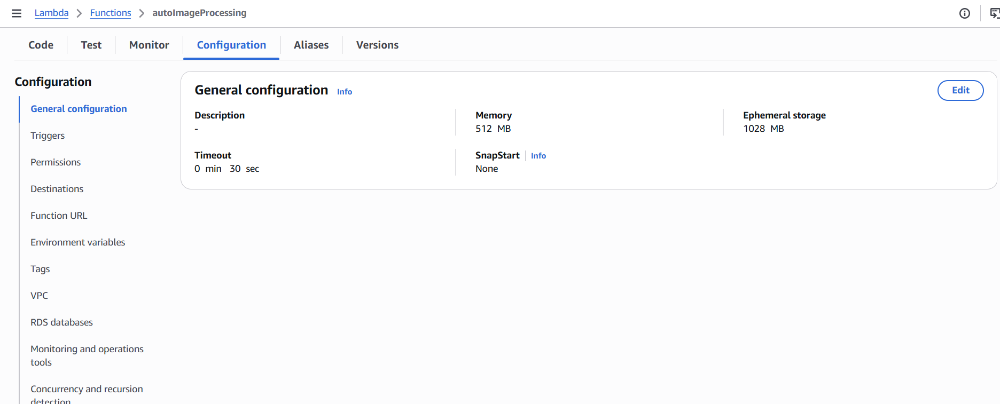

After creating the Lambda function, the next step is to configure the required components so that Lambda can perform image optimization in the Automatic Image Optimization System on AWS.
The configuration includes:
Open the Lambda function:
autoImageProcessing
In the:
Code
tab, select:
Upload from
|
+--> .zip file
Upload the ZIP file containing the image processing source code.
Source code structure:
lambda-function/
│
├── lambda_function.py
└── requirements.txt
Where:
lambda_function.py: contains the logic for processing events from Amazon S3.boto3: the library used to interact with AWS services.Pillow: provided through a Lambda Layer.The Pillow library is not packaged directly with the source code. Instead, Lambda uses a dedicated Lambda Layer to provide the image processing library, ensuring compatibility with the AWS Lambda Linux runtime environment.
In the:
Runtime settings
section, select:
Edit
Configure the Handler as:
lambda_function.lambda_handler
Explanation:
lambda_function: the name of the Python source file.lambda_handler: the entry point function invoked by AWS Lambda when an event is received from Amazon S3.Example:
def lambda_handler(event, context):
# Process S3 event
Since Lambda uses the Pillow library for image processing, a Lambda Layer containing the library must be attached.
Navigate to:
Lambda Function
|
+--> Code
|
+--> Layers
Select:
Add a layer
Choose:
Custom layers
Select the layer:
pillow-layer
Compatible runtime:
Python 3.14
After adding the layer, Lambda can use:
from PIL import Image
to perform:
Lambda uses Environment Variables to store configuration values instead of hardcoding them in the source code.
Navigate to:
Configuration
|
+--> Environment variables
Select:
Edit
Add the following environment variable:
| Key | Value |
|---|---|
| METADATA_TABLE | ImageMetadata |
This variable is used by Lambda to:

Using Environment Variables separates configuration from the source code, making it easier to change AWS resources without modifying the application.
Image processing requires Lambda to perform the following tasks:
Therefore, Lambda should be configured with appropriate execution resources.
Navigate to:
Configuration
|
+--> General configuration
Select:
Edit
Set:
512 MB
A higher memory allocation improves image processing performance when using the Pillow library.
Set:
30 sec
This provides Lambda with enough time to:

Lambda uses an Execution Role to access AWS services during image processing.
Navigate to:
Configuration
|
+--> Permissions
Verify the Execution Role:
LambdaExecutionRole
The IAM role should include the following permissions:
Permissions:
s3:GetObject
s3:PutObject
Purpose:
Permissions:
dynamodb:PutItem
dynamodb:UpdateItem
Purpose:
PROCESSING
SUCCESS
FAILED
Permissions:
kms:Decrypt
kms:Encrypt
kms:GenerateDataKey
Purpose:
Permission:
AWSLambdaBasicExecutionRole
Purpose:
In production environments, Full Access policies should not be used. IAM policies should grant only the permissions required by the Lambda function, following the Principle of Least Privilege.
The system uses AWS KMS to protect data stored in Amazon S3.
The following buckets:
Input Bucket
Output Bucket
are configured to use a KMS key.
Lambda accesses these encrypted resources through the Execution Role:
LambdaExecutionRole
After completing all changes, click:
Save
AWS Lambda will update the function with the new configuration.
After the configuration is completed successfully:
Function name:
autoImageProcessing
Runtime:
Python 3.14
Handler:
lambda_function.lambda_handler
Memory:
512 MB
Timeout:
30 sec
Environment:
Configured
Layer:
pillow-layer
Execution Role:
image-optimizer-role
At this stage, the Lambda function is fully prepared for automatic image processing.
Current architecture:
Backend API
|
|
v
Input S3 Bucket
|
|
S3 Object Created Event
|
v
autoImageProcessing Lambda
|
+------------+------------+
| |
v v
Optimize Image Generate Thumbnail
| |
+------------+------------+
|
v
Output S3 Bucket
|
v
DynamoDB Metadata
|
v
CloudWatch Logs
The Lambda function will be further configured with the S3 Event Trigger in the next step.